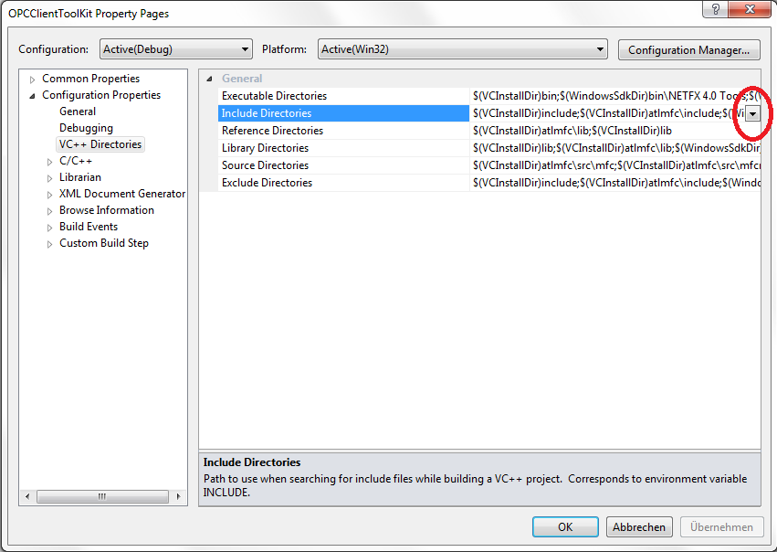
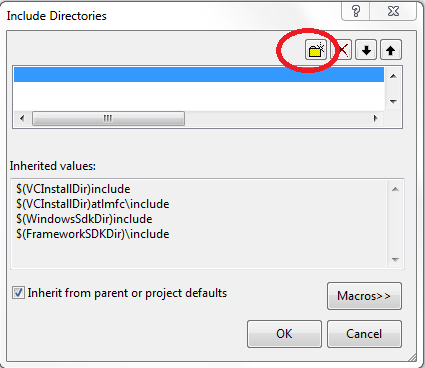
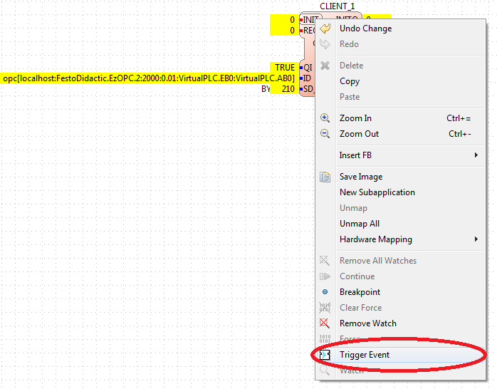
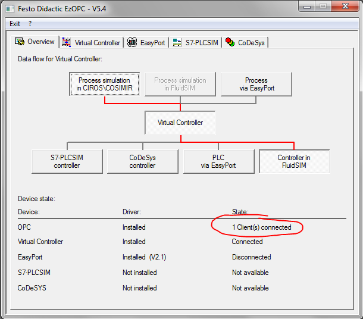

OPC DA
This section will show you how to create an OPC DA Client with 4DIAC and how to use it with FORTE. Download the following packages:
Prepare and compile OPC Client Toolkit
- Unzip Boost C++ Libraries
- Visual Studio Express do not include ATL (Active Template Library) which is necessary to compile OPCClientToolKit. This can be aquired by installing windows driver kit.
- Unzip OPC Client and open the OPCClientToolKit project in Visual Studio.
- Add ATL header files to the project: Configuration Properties → VC++ Directories → Include Directories


- Add the path of ATL header files which are in the windows driver kit installation path. (E.g. C:\WinDDK\7600.16385.1\inc\atl71)
- Edit the function init() in OPCClient.cpp from:
void COPCClient::init()
{
HRESULT result = CoInitialize(NULL);
if (FAILED(result))
{
throw OPCException("CoInitialize failed");
}
CoInitializeSecurity(NULL, -1, NULL, NULL, RPC_C_AUTHN_LEVEL_NONE, RPC_C_IMP_LEVEL_IMPERSONATE, NULL, EOAC_NONE, NULL);
result = CoGetMalloc(MEMCTX_TASK, &iMalloc);
if (FAILED(result))
{
throw OPCException("CoGetMalloc failed");
}
}
to:
void COPCClient::init()
{
CoInitializeSecurity(NULL, -1, NULL, NULL, RPC_C_AUTHN_LEVEL_NONE, RPC_C_IMP_LEVEL_IMPERSONATE, NULL, EOAC_NONE, NULL);
HRESULT result = CoGetMalloc(MEMCTX_TASK, &iMalloc);
if (FAILED(result))
{
throw OPCException("CoGetMalloc failed");
}
}
- Build project
- Create the following folder structure:
- [opcclientroot]/include - put header files from OPCClientToolKit project here
- [opcclientroot]/lib - OPCClientToolkit.lib
Compile FORTE with OPC DA Client Support
- Create a MS Visual Project of FORTE with CMake as described in Compiling and Debugging FORTE with MS Visual Studio Express and add the following variables which are required for OPC Client support:
- Check FORTE_COM_OPC
- FORTE_COM_OPC_BOOST_ROOT - choose [boostroot]
- FORTE_COM_OPC_LIB_ROOT - choose [opcclientroot]
- Open FORTE Project with MS Visual Studio.
- Add ATL headers to the FORTE project.
forte Properties → Configuration Properties → VC++ Directories → Include Directories → add ATL headers path ([windowstoolkitroot]/inc/atl71/)
- Add ATL libraries to the forte project:
forte Properties → Configuration Properties → VC++ Directories → Library Directories → add ATL library path ([windowstoolkitroot]/lib/ATL/i386/)
- compile or debug FORTE
- When running in debug-mode, it is maybe necessary to exclude some native libraries
Forte Properties/Configuration Properties/Linker/Input/Ignore Specific Default libraries/Edit/LIBCMTD
Create OPC Client
Start the 4DIAC-IDE and create a new System with a new Application for one Device. Add a CLIENT_1 Function Block to the Application, set the following input values, and map it to the hardware.
- QI = 1
- ID = opc[localhost:FestoDidactic.EzOPC.2:2000:0.01:VirtualPLC.EB0:VirtualPLC.AB0]
- SD_1 = BYTE#210
whereas the ID input has the following format:
opc[host:serverName:updateRate:deadBand:fbInputItems:fbOutputItems]
- host: address to computer with OPC server
- serverName: OPC server name, e.g. Matrikon.OPC.Simulation
- updateRate: update frequency in milliseconds
- deadBand: dead band used for update of value (same unit as value)
- fbInputItems/fbOutputItems: items to be added, items should be separated with a comma e.g.
Change to the Deployment perspective, start Forte and download the Application. Switch the System into online mode and start watching the in- and outputs. For further information about Monitoring functionalities follow the link.
After triggering the INIT event, the OPC-client tries to connect with the OPC-server. In this example the OPC-server is "FestoDidactic.EzOPC.2". It is a tool from Festo and can be downloaded here.

When the connection is established, a window of the server pops up.

Now trigger the REQ event to send the data from client to server. "BYTE#210" should be send to the server's port "VirtualPLC.EB0". Click to "Virtual Controller" tab to check if the OPC server has received the information.

Where to go from here?
Go back to Protocols index:
Communication Index
If you want to go back to the Start Here page, we leave you here a fast access
Start Here page
Or Go to top